Инструмент Effect (Эффект) (Урок 3)
Инструмент Hue (Оттенок)
Инструмент Hue (Оттенок) позволяет избирательно сдвигать цвета в изображении при помощи кисти. Собственно, как и в случае с другими категориями кисти, можно догадаться о назначении этого инструмента. В его использовании нет никаких сложностей. Вы работаете, как обычной кистью. Рассмотрим пример использования инструмента. На рис. 1 показано исходное изображение.
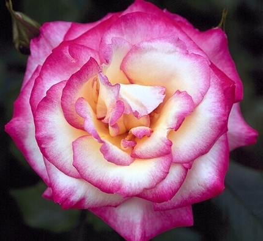
В раскрывающемся списке Brush type (Тип кисти) выберете тип Large Soft Hue (Большой Мягкий Оттенок) и закрасьте розу. Закрашивать надо за один раз, не отрываясь, другими словами, это должен быть один большой мазок. Можете несколько раз пройтись по одному и тому же месту, но не отпуская кнопку мыши. Результат показан на рис. 2.
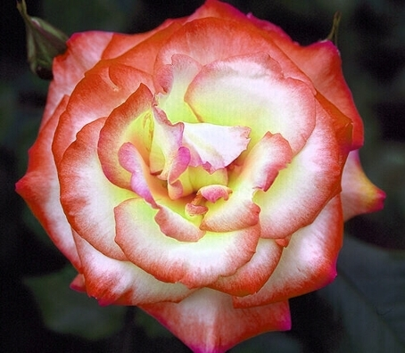
На рис. 3 показано, что будет, если вы «прошлись кистью» по розе, прервали мазок (отпустили кнопку мыши) и повторно сделали мазок поверх предыдущего.
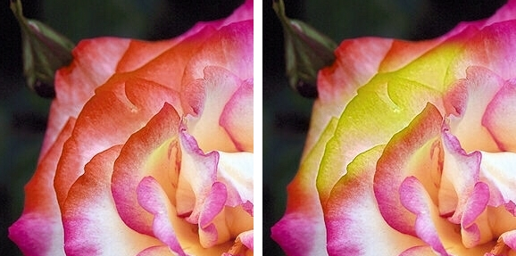
Инструмент Hue (Оттенок) в итоге закрасил лепестки желтовато-зеленым цветом. На рисунке слева показан результат одного прохода кистью, а справа, после второго прохода (мазка), поверх первого мазка кистью.
Если вы присмотритесь к параметрам этого инструмента, то в зависимости от выбора типа в списке Brush type (Тип кисти), изменяется лишь размер и мягкость кисти. Параметры Amount (Стекание) и Transparency (Прозрачность) остаются неизменными.
Инструмент Hue Replacer (Заменитель оттенка)
Этот инструмент аналогично инструменту Hue (Оттенок), избирательно меняет оттенки в изображении, однако в отличие от него, эффект основан на цвете краски. Другими словами, результат зависит от цвета краски, который вы выбрали, к примеру на Палитре. Используя то же исходное изображение, выберем в списке Brush category (Категория кисти) инструмент Hue Replacer (Заменитель оттенка). В списке Brush type (Тип кисти) выберем тип Large Soft Hue Replacer (Большой Мягкий Заменитель Оттенка). Щелкнем на Цветовой палитре голубой цвет и закрасим цветок. Результат показан на рис. 4. На рисунке показана лишь закрашенная часть. Я не стал перекрашивать весь цветок.
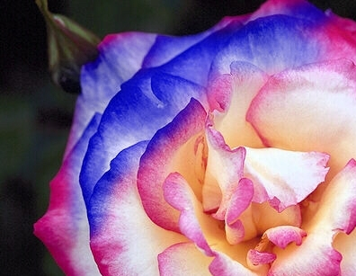
Инструмент Sponge (Губка)
Этот инструмент позволяет избирательно изменять насыщенность участков изображения при помощи кисти. Сразу приступим к рассмотрению примера. На рис. 5 (слева) показана часть фотографии фотомодели.
Понятно, что автор этого фото специально сделал бронзовый оттенок кожи, но по-моему немного получился перебор. Однако наша задача, не критиковать оригинал, а предположим, осветлить кожу, чтобы она стала более или менее похожа на естественную.
В списке Brush type (Тип кисти) выберем тип Natural Sponge (Натуральная Губка). Изменим на Панели свойств параметры по умолчанию и установим следующие значения: Transparency (Прозрачность) = 60 и размер кисти увеличим до 70 px. Обработав лицо кистью, получим такой результат, как на рис. 5 (справа).
Я не стал дотошно обрабатывать лицо, что видно по остаткам «старого» оттенка на подбородке и в некоторых других местах, а кожу на шее вообще не стал «трогать». Однако даже в этом случае, понятен результат работы этого инструмента.
В данном примере, было значительно увеличено значение Transparency (Прозрачности). По умолчанию, значение этого параметра равно 0. Если бы при таком значении обработать лицо, то фотомодель стала бы похожа на "приведение или мертвеца", почти с абсолютно белой кожей.
Используя инструмент Sponge (Губка), можно выполнить обратную задачу, т. е. вернуть коже бронзовый оттенок. Для этого воспользуемся типом Sponge Add (Добавление Губки) и установим значение Transparency (Прозрачности) = 50. Результат показан на рис. 6.
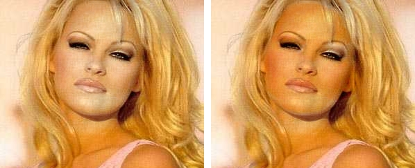
Слева изображение после обработки Natural Sponge (Натуральной Губкой), как было описано выше, а справа, после обработки кистью Sponge Add (Добавление Губки).
Тип кисти Sponge Remove (Удаление Губки) по своему действию аналогичен Natural Sponge (Натуральной Губке), но имеет более сильно выраженный эффект.
Инструмент Tint (Оттенок)
Здесь, как во многих других местах, локализованной русской версии, натыкаемся на казус с переводом. Две разных категории кисти имеют одинаковое русское название, в данном случае Hue и Tint. Но не будем на этом "зацикливаться", а посмотрим, что мы можем сделать с помощью этой категории инструмента Effect (Эффект). Этот инструмент позволяет затенять участки изображения цветом краски. Давайте посмотрим, что с этим можно сделать. На рис. 7 показано исходное изображение.
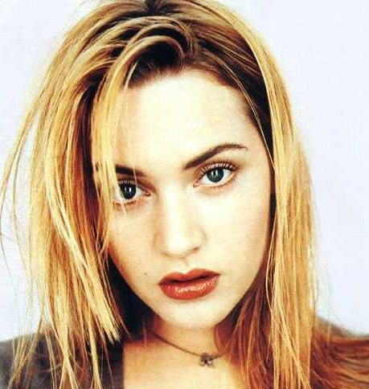
Предположим, что вам чем-то не понравился «светлый блик» на носу и вы решили придать ему более темный оттенок телесного цвета. Помня, что данный инструмент использует цвет краски, мы этим и воспользуемся. Благо, нам не нужно изобретать велосипед, возьмем образец цвета краски прямо из изображения (см. рис. 8).
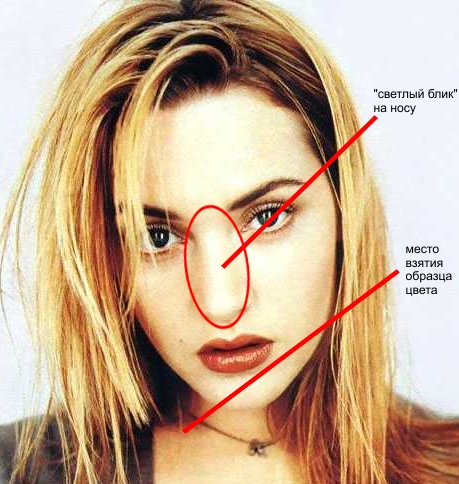
Для взятия образца цвета, воспользуемся инструментом Eyedropper (Пипетка), горячая клавиша Е. На Панели свойств выберите тип Пипетки 5х5 и щелкните на «темном» участке кожи. Теперь переключитесь обратно на инструмент Tint (Оттенок) и выберем в списке Brush type (Тип кисти) тип Tint Lightly (Легкий оттенок). При попытке что-нибудь сделать для выполнения нашей задачи, мы столкнемся с тем, что параметры по умолчанию нас не совсем устраивают. На Панели свойств установите следующие значения: Amount (Стекание) = 10; Transparency (Прозрачности) = 15. В докере Brush Settings (Настройки кисти) измените размер и форму кисти, как на рис. 9.
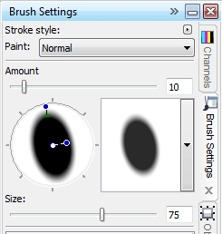
Все, что нам теперь осталось, аккуратно обработать нос. Достаточно одного-двух мазков. Результат показан на рис. 10.
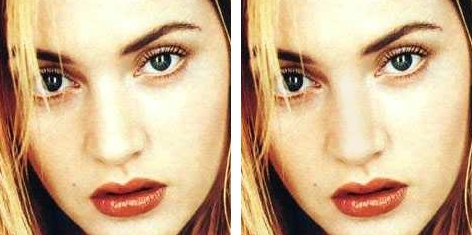
Слева показана часть исходного изображения, справа после применения кисти. Силу эффекта можно в этом случае подкорректировать значением Transparency (Прозрачности) (чем меньше Прозрачность, тем сильнее эффект). Также усиление будет проявляться при выполнении повторного мазка поверх первого. Однако в этом случае возможно появление нежелательного «избыточного» оттенка на носу. В любом случае, при выполнении подобных действий, придется повозиться с подбором наилучших значений параметров и настройками кисти.
Инструмент Blend (Перетекание)
Инструмент Blend (Перетекание) позволяет избирательно смягчать расхождение между цветами или жесткими краями изображения при помощи кисти. Так звучит определение назначения этого инструмента. В некоторых случаях это весьма полезный инструмент. Используя его свойства, можно смягчить границу между участками изображения, имеющими разный оттенок или цвет. Что это означает на практике? Давайте еще раз посмотрим на изображения выше и даже при беглом взгляде увидим дефекты, характерные для многих изображений. А именно «зернистость», всякого рода шумы и т. д. Некоторые из этих дефектов, можно с успехом удалить с помощью инструмента Blend (Перетекание). На рис. 11 показан результат обработки инструментом Blend (Перетекание).
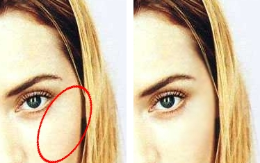
Слева – исходное изображение, справа – результат. Я выбрал кисть Bland A Lot (Сильное Перетекание) и обработал часть, которая обведена овалом. Инструмент «загладил пятна», отчего кожа в обработанной части лица стала выглядеть «чище». Конечно, не надо думать, что с помощью этого инструмента можно «облагородить» все изображения. Слишком большие и заметные дефекты могут оставаться заметными.
Если вы обратитесь к докеру Brush Settings (Настройки кисти), то заметите, что в группе параметров Stroke Attributes (Атрибуты мазка) докера Brush Settings (Настройки кисти), доступна кнопка Toggle Cumulative (Переключать накопление) (рис. 12), хотя эта же кнопка доступна и для некоторых других категорий инструмента Effect (Эффект).
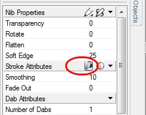
Включение этой кнопки позволяет усиливать эффект, без необходимости делать повторные мазки. В примере, на рис. 11, чтобы достичь нужного эффекта, нужно было сделать, наверно около 10 мазков. При нажатии кнопки Toggle Cumulative (Переключать накопление) достичь тот же результат (и даже лучше) можно практически сразу.
Конечно, применение инструмента Blend (Перетекание) не ограничивается только подобными ситуациями, но в данном примере было наглядно видно, как он работает.
Инструмент Sharpen (Повышение резкости)
Данный инструмент полностью соответствует своему названию. Зачем повышать резкость в изображении, пояснять конечно не нужно. Я к сожалению не нашел подходящее изображение для того, чтобы наиболее удачно показать применение этого инструмента. Но можно уверенно сказать, что его можно с успехом применять для повышения резкости тех частей изображения, которые должны выглядеть выразительно и выделяться, чтобы привлечь внимание зрителя. Конечно, в некоторых ситуациях возникает необходимость увеличить резкость некоторых недостаточно четких частей, чтобы картинка в целом выглядела более удачно. Я все же для примера обработал этим инструментом одно изображение. На рис. 13 показано исходное изображение (слева) и результат (справа).
Конечно нельзя сказать, что это удачный пример, но тем не менее, заметно, что узоры на шариках выглядят значительно четче.